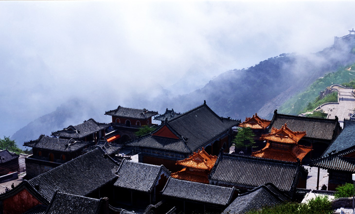
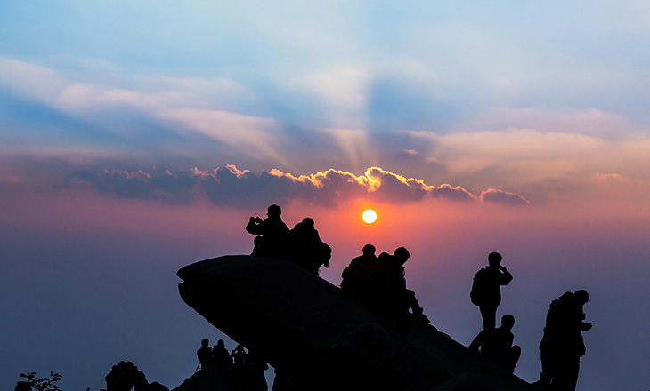
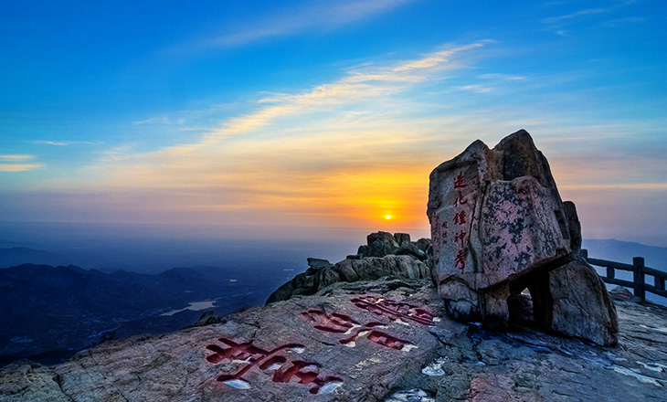
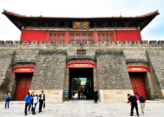
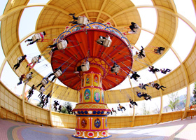
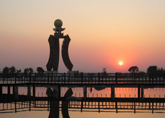
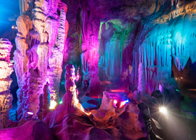

- 
- 
- 
泰安市-泰山玉皇廟
『遙知兄弟登高處，遍插茱萸少一人』，王維一首《九月九日憶山東兄弟》寫出了重陽佳節之時的思鄉情懷。九月初九，是中國的傳統節日—重陽節，而重陽登高插茱萸一直以來都被人們認為可以除災避害。
平安是泰山文化的核心元素之一，「泰山安，則天下安。」泰山象徵著中華民族的精神家園，是人們心中的國山、聖山。
在中國乃至全世界，還沒有一座山像泰山一樣，在數千年的歷史發展中，始終維繫著一個古老民族「國泰民安」的信念，泰山已成為一種象徵，在人們生生不息的活動中，泰山一直寄託著每一個炎黃子孫對生活和諧、平安的期盼與嚮往。
泰安市-泰山
泰安市-泰山拱北石
泰山海拔1545公尺，為中國五嶽之首，東嶽泰山 “五嶽獨尊”享負盛名。遠古至今，歷代帝王前來巡狩祭祀，留下豐富文化遺產。泰山山頂「岱頂」猶如一處天庭仙界，是古代帝王前來泰山封禪祭祀之處。
南天門為岱頂門戶，後方「未了軒」供奉送子觀音，香爐前盡是掛満信徒刻字鎖頭，以表永結同心；天街是天上市集，六百公尺的石砌步行道，是岱頂主要的食宿購物區；碧霞祠主祀碧霞元君，是來泰山祭祀的重點；玉皇頂也就是泰山最高峰，正殿供奉玉皇大帝，古代帝王封禪泰山就是在此祭天，祈求百姓安康。
泰山至今保護完好建築群22處，以及12處石坊、兩千多處刻石，整座山峰峻峭傲然，被讚譽為“活著的世界自然遺產”。
泰安市-十八盤步道
泰安市-泰山仙人橋
最經典—泰山東路（紅門路）登頂路線
紅門遊覽線是古今最主要的登山旅遊路線，是歷朝皇帝的登山禦道。沿途林蔭夾道，石階盤旋，自然景觀雄奇秀美，古跡眾多，傳統文化韻味濃郁。是條各種人文、自然景觀集中的精華登山道，適合初登者和體力好者。
最省事—泰山西路（天地廣場）登頂路線
它由兩段組成：前段為天地廣場至半山腰中天門的盤山公路；後段是中天門到泰山極頂的高山索道。是條最完備和最現代化的登頂路，也是最省力的登山道；適合偷懶者。
最便捷—泰山桃花峪景區登頂路線
桃花峪位於泰山西麓，因古時桃林滿穀而名。比較其它幾條登山旅遊線，是最為便捷也是人較少的一條登山線路。該條路線最適宜遊覽的季節為春夏兩季，春天桃花開時尤其美。建議打算乘索道登泰山時，首先考慮這一條。
最奇秀——天燭峰景區登頂線路
天燭峰因形似蠟燭而得名，是泰山所有登頂路中最為原始和古樸的路線，山野氣息濃郁。山勢的險峻程度稍遜於前山的紅門登山路，是泰山人工開發程度最低的景區，原始樸拙，自然風貌保持完好，以奇松、怪石著稱，是泰山「奧絕」所在。
泰安市-肥城採桃
泰安市-泰山賓館豆腐宴
吃在泰山
泰山的美食眾多，大致分為風味筵席和小吃兩類。歷來帝王來太山都『食素齋，潔身養性』，以示虔誠，所以風味筵席中以豆腐宴和野菜宴最為著名。小吃則有泰山大煎餅、泰山小豆腐、泰山燒烤、泰安白蜜食等等。
買在泰山
在泰山可以買到著名的山東特產-泰山煎餅、以泰山泉水哺育的珍貴山區淡水魚-泰山赤鱗魚，還有並稱為“泰山三大特產”的肥城桃、泰山板栗、甯陽大棗，以及泰山赤靈芝。
玩在泰山
《中華泰山-封禪大典》大型實景演出是由著名文化大師梅帥元先生在泰山自然與文化雙遺產的基礎上，通過古代帝王對泰山封禪、祈福活動的藝術提煉，呈現秦、漢、唐、宋、清五朝六帝封禪泰山時的祈福場景。
岱廟
岱廟又稱東嶽廟、泰廟，位於泰山南麓，泰安市境內，是古代帝王奉祀泰山神，舉行祭祀大典的場所。也是泰山上下延續時間最長、規模最大、保存最完整的一處古建築群。
岱廟
泰山方特歡樂世界
方特歡樂世界以科幻、動漫和中國文化元素為最大特色，採用當今國際一流的理念和技術精心打造，可與當前西方最先進的主題公園相媲美，被譽為『東方夢幻樂園』。
泰山方特歡樂世界
太陽部落景區
太陽部落以大汶口文化為主線，以情景體驗的形式，將史前文化和遊樂項目有機融合，使遠古文明的場景在遊客面前真實展現，是中國體驗展現史前文明的特大型文化主題公園。
太陽部落景區
泰安市寶泰隆泰山地下大裂谷
涵蓋觀光娛樂、休閒度假、餐飲購物、文化體驗、特色演出等五大板塊，是一家集吃、住、行、遊、購、娛等要素於一體的國內一流的高端文化旅遊產業園。
寶泰隆泰山地下大裂谷
東平湖旅遊區
景區內主要景點有東方好萊塢-東平水滸影視城、世界第一寨-六工山水滸大寨、天下第一壩-戴村壩、國家森林公園-臘山、國家重點文保單位-白佛山、國家城市濕地公園-稻屯窪濕地公園等眾多景點組成，是水滸文化旅遊勝地。

東平湖